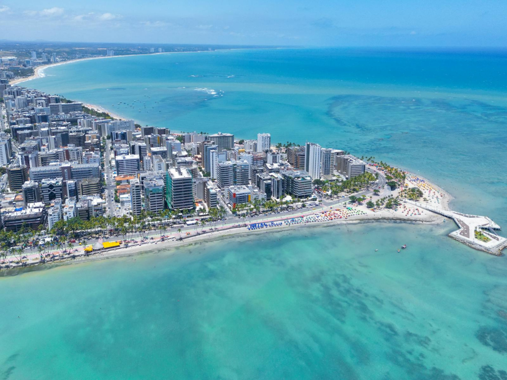

Alagoas é um estado do Nordeste brasileiro que encanta pela exuberância de seu litoral, sendo frequentemente chamado de "Caribe Brasileiro" devido às águas mornas e em tons de azul-turquesa e verde-esmeralda. Sua capital, Maceió, é famosa pelas praias urbanas de areias brancas e piscinas naturais formadas por extensas barreiras de corais. Além das famosas praias, como as de Maragogi e do Francês, o estado possui uma riqueza histórica e cultural profunda, refletida no artesanato do Pontal da Barra e na gastronomia à base de frutos do mar e das lagoas Mundaú e Manguaba, que dão nome à terra. O cenário se completa com o imponente Rio São Francisco, que marca a fronteira sul e oferece cânions e paisagens de beleza singular no sertão alagoano.
